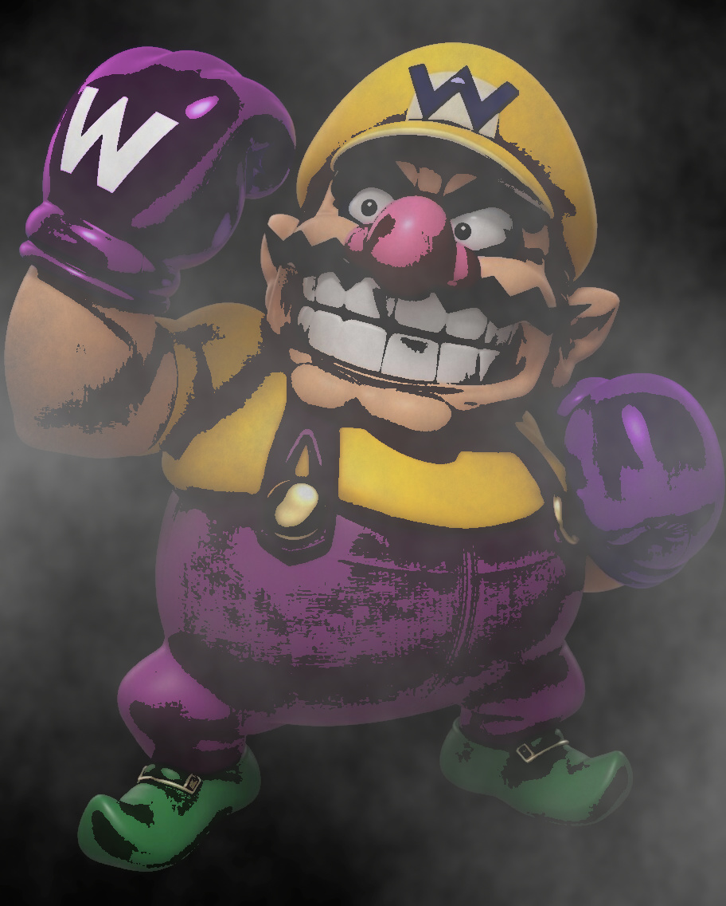

Edició i Retoc d'Imatges Digitals
Objectiu de la Pràctica
L'objectiu d'aquest projecte és l'adquisició de capacitats pràctiques en el disseny, manipulació gràfica i retoc professional de recursos multimèdia en formats digitals de mapa de bits. La pràctica es centra en la neteja de contorns, correcció cromàtica, gestió de capes de fusió i optimització de formats d'exportació.
Galeria d'Imatges Editades
A continuació es mostren les obres gràfiques reals editades en aquest projecte acadèmic:

Personatge: Wario
Tractament cromàtic, perfilat de vores netes, escala proporcional de píxels, optimització de compressió de color en format JPEG per garantir temps de resposta àgils a la web.

Il·lustració: Mario Strikers
Disseny de transparències alfa per a canal buit en format PNG de gran definició, manteniment de detalls en degradats dinàmics reals i ajustament de contrastos de textures.